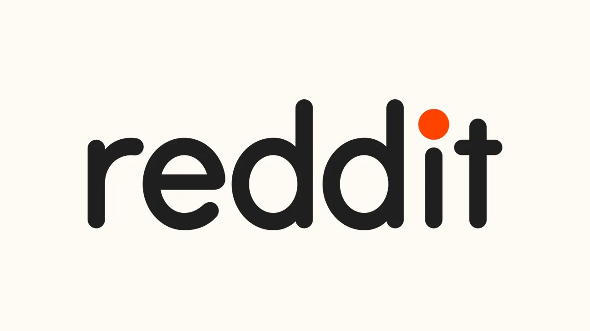

레딧 RDDT를 볼 때 가장 많이 보이는 질문은 “이 커뮤니티 데이터가 AI 시대에 얼마나 비쌀까”입니다. 질문 자체는 맞습니다. 레딧에는 사람들이 상품을 비교하고, 고장을 묻고, 투자 의견을 다투고, 취미와 직업 경험을 길게 남긴 대화가 쌓여 있습니다. 검색엔진과 생성형 AI가 점점 답변형 서비스로 이동할수록 이런 사람 냄새 나는 데이터의 가치는 더 커질 수 있습니다. 다만 주주가 먼저 확인해야 할 숫자는 데이터 라이선스보다 광고 ARPU입니다.
2026년 3월 31일로 끝난 1분기에 레딧 매출은 6억6,340만달러로 전년 대비 69% 늘었습니다. 광고 매출은 6억2,500만달러로 74% 증가했고, 기타 매출은 3,900만달러로 15% 늘었습니다. 순이익은 2억400만달러였고, 조정 EBITDA는 2억6,600만달러로 매출의 40.1%였습니다. 영업현금흐름은 3억1,200만달러, 잉여현금흐름은 3억1,100만달러였습니다. 소셜미디어 회사가 성장과 현금흐름을 동시에 보여준 분기였습니다.
하지만 숫자가 좋아졌다고 해서 모든 의문이 사라진 것은 아닙니다. 레딧의 하루 활성 고유 이용자 DAUq는 1억2,680만명으로 17% 늘었지만, 더 인상적인 것은 글로벌 ARPU가 5.23달러로 44% 오른 점입니다. 미국 ARPU는 9.63달러, 해외 ARPU는 2.02달러였습니다. 이용자 수 증가보다 이용자 한 명이 만드는 매출의 질이 더 빨리 좋아졌다는 뜻입니다. 그래서 이번 글은 레딧을 AI 데이터 회사로만 보지 않고, 광고 단가와 검색 유입, 해외 수익화가 함께 맞는지 확인하는 순서로 읽겠습니다.
DAUq보다 ARPU가 먼저 말해주는 것

레딧의 이용자 지표는 겉으로 보면 단순합니다. 글로벌 DAUq는 1억2,680만명, 주간 활성 고유 이용자 WAUq는 4억9,310만명입니다. 이 정도면 이미 큰 플랫폼입니다. 그러나 광고 플랫폼 주식에서 더 중요한 질문은 “사람이 얼마나 많나”보다 “그 사람이 광고주에게 얼마나 가치 있게 보이나”입니다. 이번 분기의 글로벌 ARPU 5.23달러는 전년 대비 44% 높아졌고, 미국 ARPU는 54% 오른 9.63달러였습니다.
이 변화는 레딧이 단순 커뮤니티 사이트에서 성과형 광고 플랫폼으로 넘어가는 중이라는 신호입니다. 광고주는 사람이 많이 모이는 곳보다 구매 의도와 관심사가 선명한 곳에 더 높은 단가를 줄 수 있습니다. 레딧은 검색형 질문, 제품 비교, 문제 해결형 게시글이 많습니다. 광고주가 “이용자가 지금 무엇을 고민하는지”를 파악하기 쉬운 환경입니다. 이 장점이 광고 상품 개선과 맞물리면 ARPU가 더 올라갈 수 있습니다.
다만 미국과 해외의 격차는 아직 큽니다. 미국 ARPU가 9.63달러인데 해외 ARPU는 2.02달러입니다. 해외 DAUq는 7,330만명으로 미국보다 많고 전년 대비 26% 늘었습니다. 그런데 매출화는 아직 약합니다. 레딧이 해외 언어, 현지 광고주, 현지 커뮤니티 운영을 얼마나 잘 붙이느냐에 따라 같은 이용자 성장도 전혀 다른 가치로 바뀝니다. 해외 이용자가 늘어도 광고 단가가 따라오지 않으면 주가는 “성장하지만 덜 버는 플랫폼”으로 볼 수 있습니다.
그래서 주주는 DAUq 증가율과 ARPU 증가율을 나란히 봐야 합니다. DAUq가 17% 늘고 ARPU가 44% 올랐던 이번 분기는 아주 좋은 조합입니다. 앞으로 이 조합이 무너지면 해석이 달라집니다. 이용자는 늘지만 ARPU가 멈추면 광고 상품의 가격 결정력이 약해졌다는 뜻일 수 있고, ARPU는 오르지만 DAUq가 둔화되면 단기 광고 효율은 좋지만 플랫폼 체력이 약해지는 신호일 수 있습니다.
AI 데이터 라이선스는 보너스가 아니라 검증 과제
관련 영상
레딧 RDDT의 흑자 전환과 AI 데이터 수익화를 설명하는 한국어 롱폼 영상
레딧의 기타 매출은 3,900만달러였습니다. 광고 매출 6억2,500만달러와 비교하면 아직 작습니다. 이 항목에는 데이터 라이선스와 기타 비광고 수익원이 들어갑니다. AI 회사들이 공개 웹의 인간 대화를 학습 데이터로 필요로 한다는 점을 생각하면, 레딧 데이터의 전략적 가치는 분명합니다. 문제는 그 가치가 얼마나 반복적이고 방어 가능한 매출이 될 수 있는지입니다.
레딧 데이터가 매력적인 이유는 검색 결과보다 맥락이 풍부하기 때문입니다. 같은 제품을 두고 장점과 단점이 긴 대화로 남고, 특정 직군이나 취미 커뮤니티의 암묵지가 누적됩니다. 생성형 AI가 더 정확한 답을 하려면 이런 실제 사용자 경험이 필요합니다. 그래서 AI 데이터 라이선스는 레딧의 밸류에이션을 설명하는 좋은 이야기입니다.
하지만 투자자는 이 이야기를 아직 본업 광고와 분리해서 봐야 합니다. 기타 매출은 전년 대비 15% 성장에 그쳤고, 전체 매출에서 차지하는 비중은 작습니다. AI 라이선스가 장기 옵션이라면 좋은 일입니다. 그러나 당장의 실적을 지탱하는 것은 광고 매출입니다. RDDT 주가가 AI 데이터 기대만으로 너무 앞서가면, 다음 분기 광고 성장률이 조금만 둔화돼도 조정 폭이 커질 수 있습니다.
또 하나의 모순도 있습니다. SEC 10-Q는 이용자가 AI 도구에서 답을 얻고 레딧을 직접 방문하지 않을 수 있다고 경고합니다. AI 회사가 레딧 데이터를 쓰는 것은 수익 기회이지만, 동시에 레딧으로 들어오는 검색 트래픽을 줄일 수도 있습니다. 데이터를 팔아 돈을 벌면서도, 그 데이터가 사용자를 플랫폼 밖에서 만족시키면 광고 노출 기회는 줄어듭니다. 이 균형이 레딧의 가장 흥미로운 지점입니다.
검색 유입은 성장 엔진이자 외부 리스크
레딧은 검색과 잘 맞는 사이트입니다. 누군가 “이 제품 실제로 괜찮나”, “이 오류를 어떻게 고치나”, “이 회사 면접은 어떤가”를 찾으면 레딧 게시글이 자연스럽게 걸립니다. 10-Q에서도 회사는 구글 같은 검색엔진의 무료 검색 유입에 일정 부분 의존한다고 설명합니다. 최근 레딧 성장에서 비로그인 DAUq가 빠르게 늘어난 것도 이 흐름과 연결해서 봐야 합니다. 글로벌 비로그인 DAUq는 7,480만명으로 전년 대비 26% 증가했습니다.
비로그인 이용자는 레딧에 좋은 첫 관문입니다. 광고 노출을 만들고, 나중에 가입자로 전환될 수도 있습니다. 동시에 가장 취약한 유입이기도 합니다. 검색 알고리즘이 바뀌거나, 답변형 검색 화면이 레딧 링크 클릭을 줄이거나, 기계 번역 콘텐츠 평가 방식이 달라지면 트래픽이 흔들릴 수 있습니다. SEC 문서도 검색엔진의 알고리즘과 사용자 인터페이스 변화가 웹사이트 트래픽과 사업에 부정적 영향을 줄 수 있다고 설명합니다.
이 리스크는 메타나 스냅과 다르게 봐야 합니다. 메타는 앱 안의 관계망과 광고주 도구가 강하고, 스냅은 카메라와 메시징 습관에 기대는 부분이 큽니다. 레딧은 커뮤니티와 검색 의도가 강하지만, 그만큼 외부 검색 노출의 영향도 큽니다. 핀터레스트와 비슷하게 “검색형 관심사 플랫폼”의 성격이 있습니다. 그래서 레딧의 성장률을 볼 때는 로그인 DAUq와 비로그인 DAUq를 나눠야 합니다.
이번 분기 글로벌 로그인 DAUq는 5,200만명으로 7% 증가했습니다. 비로그인보다 증가율이 낮습니다. 이는 나쁜 숫자만은 아닙니다. 비로그인 유입이 크면 광고 인벤토리가 늘고, 장기적으로 가입 전환의 여지가 생깁니다. 다만 주주가 원하는 것은 단순 방문자가 아니라 반복적으로 돌아오는 커뮤니티 참여자입니다. 로그인 이용자 증가율이 너무 낮아지면 레딧은 “검색에서 소비되는 콘텐츠 저장소”처럼 보일 수 있습니다.
다음 분기 점검표는 광고·해외·마진
레딧은 2026년 2분기 매출 가이던스를 7억1,500만달러에서 7억2,500만달러로 제시했고, 조정 EBITDA는 2억8,500만달러에서 2억9,500만달러로 예상했습니다. Q1보다 더 높은 매출과 높은 수익성을 동시에 제시한 셈입니다. 이 가이던스가 의미 있으려면 광고 수요, 해외 ARPU, 비용 통제가 같이 맞아야 합니다. 특히 광고 매출이 74% 성장한 뒤에도 같은 속도를 유지하기는 점점 어려워집니다.
첫 번째 점검표는 광고 매출과 ARPU입니다. 광고 매출이 늘어도 ARPU가 둔화되면 광고 단가나 광고 효율이 약해졌다는 신호일 수 있습니다. 반대로 ARPU가 계속 오르면서 DAUq도 늘면 레딧은 광고 시장에서 가격 결정력을 얻고 있다고 볼 수 있습니다. 미국 ARPU는 이미 높기 때문에 앞으로는 해외 ARPU가 얼마나 따라오는지가 중요합니다. 해외 ARPU 2.02달러가 3달러, 4달러로 가는 길이 보이면 레딧의 시장 크기는 다시 계산될 수 있습니다.
두 번째 점검표는 마진입니다. Q1 조정 EBITDA 마진 40.1%, 잉여현금흐름 마진 46.9%는 매우 높은 숫자입니다. 클라우드 비용, 안전성 투자, 번역과 추천 알고리즘, 광고 영업 인력 확대를 감안하면 이 수준이 장기적으로 유지될 수 있는지가 핵심입니다. 좋은 플랫폼은 성장할수록 마진이 좋아지지만, 커뮤니티 신뢰와 콘텐츠 안전을 지키는 비용은 쉽게 줄일 수 없습니다. 레딧은 이 비용을 감당하면서도 광고 효율을 높여야 합니다.
세 번째 점검표는 주주 몫입니다. 레딧은 Q1 말 현금, 현금성 자산, 시장성 증권 27억7,100만달러를 보유했습니다. 완전 희석 주식 수는 2억640만주였습니다. 회사가 성장과 자사주 매입, 제품 투자를 어떻게 배분하는지에 따라 주주가 느끼는 가치가 달라집니다. 소셜미디어 주식은 사용자가 많아도 주식보상과 비용이 빠르게 늘면 주당 이익이 희석될 수 있습니다.
결론적으로 RDDT는 단순 밈 주식이 아닙니다. 레딧은 실제로 광고 수익화가 개선되고 있고, 현금흐름도 강해졌으며, AI 데이터 라이선스라는 장기 옵션도 갖고 있습니다. 그러나 투자 판단의 순서는 분명해야 합니다. 먼저 ARPU와 광고 매출을 보고, 그다음 로그인·비로그인 이용자 구성을 보고, 마지막으로 AI 데이터 매출이 본업을 보완하는지 확인해야 합니다. 이 세 가지가 함께 움직이면 레딧은 커뮤니티 사이트를 넘어 검색형 광고와 AI 데이터 인프라를 동시에 가진 플랫폼으로 평가받을 수 있습니다.